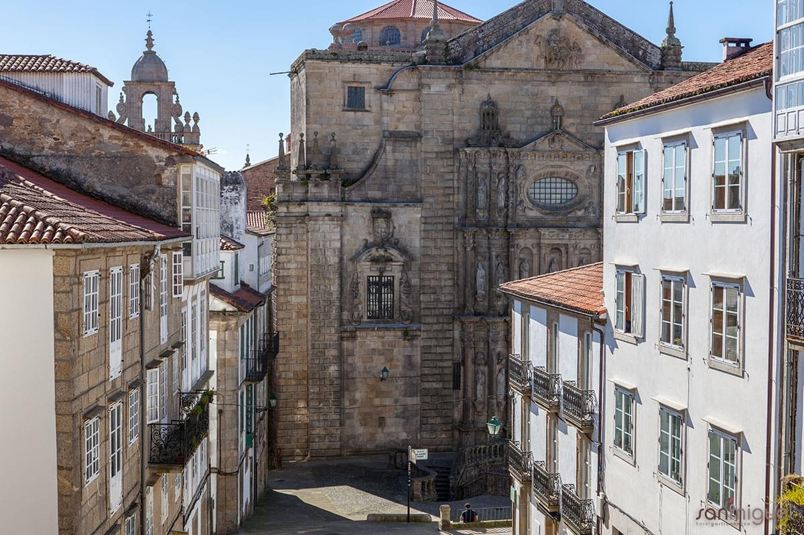

Bienvenidos
Ubicado en una de las plazas más recogidas del Casco Histórico de Santiago de Compostela, el Hotel San Miguel, combina la sobriedad de la piedra de su entorno con un diseño interior moderno pero acogedor, creando así un espacio donde el huésped se siente protagonista de una obra creada especialmente para el.
La combinación de, un trato personal, la atención en los detalles y la calidad en el servicio sumado al incomparable entorno, hacen de este hotel, el lugar ideal para el disfrute de su estancia en Compostela.
El trato personalizado, profesional y familiar, hacen de nuestro día a día la única forma que tenemos de entender la hostelería. Elementos modernos con espacios acogedores y repletos de encanto, además de nuestro emblemático patio interior que presenta una decoración basada en la filosofía Feng Shui. Todo ello para que la estancia de nuestros clientes se convierta en un momento agradable e inolvidable gracias a los cuidados servicios y a la céntrica ubicación.
Situado en el sector oriental de la ciudad histórica, integrado en la configuración urbana de la “Civitas” desde mediados del siglo XI. Cercano a Porta da Pena, puerta de la antigua muralla medieval que daba acceso a los peregrinos de Inglaterra y Flandes.
